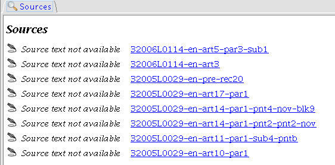

Sources Panel
The Sources Panel shows links to contexts in the domain corpus where the selected term is mentioned or defined ,
in the selected local language

In the upcoming release Sources Panel will include text extracts and working hyperlinks to the Dalos
document partitions